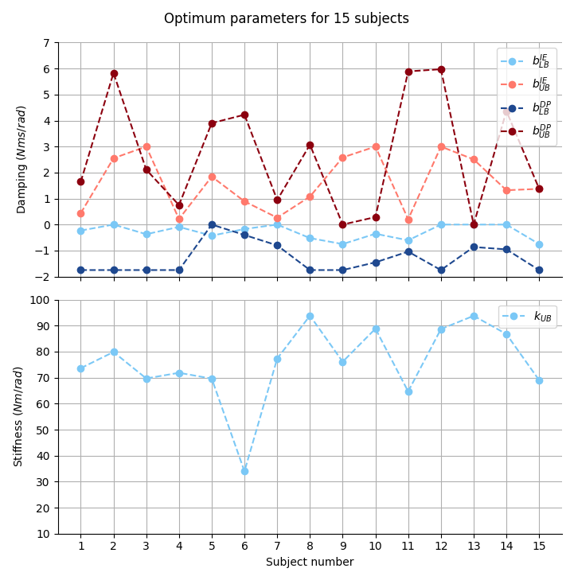

CiSTUP
Bayesian Optimization for Robot-Aided Rehabilitation: Adaptive Variable Impedance Control of a Wearable Ankle Robot
Engineered a learning based Adaptive 2D Variable Impedance Control algorithm for the ankle joint of a wearable ankle robot (Anklebot)
Anklebot Setup and GUI

Work
- Designed a Variable Impedance Controller that adjusts the impedance parameters based on the user’s kinematic data to provide personalized assistance.
- Bayesian optimization is employed to minimize an objective function formulated from the user’s kinematic data to adapt the impedance parameters per user, thereby enhancing speed and accuracy.
- Employed Bayesian Optimization and Student-t Process Regression for robust Variable Impedance Control design and user-adaptive parameter tuning.
- Gaussian process is used as a surrogate model for optimization to account for uncertainties and outliers inherent to human experiments.
- Student-t process based outlier detection is utilized to enhance optimization robustness and accuracy.
- Communication network was set up over ethernet for data transfer between anklebot and the server running Bayesian Optimization for real-time control.
- The efficacy of the optimization is evaluated based on measures of speed, accuracy, and effort, and compared with an untuned variable impedance controller during 2D curved trajectory following tasks.
- The optimized controller was evaluated on 15 healthy subjects and demonstrated an average increase in speed of 9.85% and a decrease in deviation from the ideal trajectory of 7.57%, compared to an unoptimized variable impedance controller. The strategy also reduced the time to complete tasks by 6.57%, while maintaining a similar level of user effort.
Videos and Images
Representative Result. Optimization models across iterations:
Stiffness modulation in Practice:
